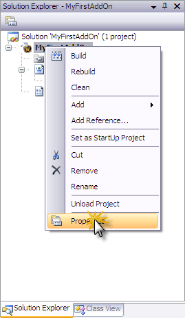
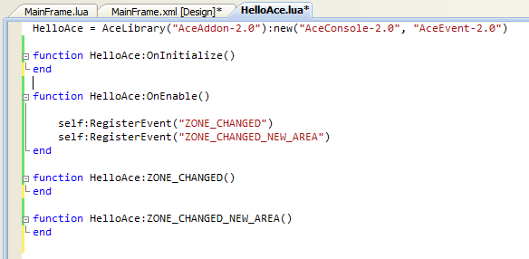

AddOn Studio for World of Warcraft Tutorial
Overview
AddOn Studio for World of Warcraft is an implementation of Visual Studio that provides World of Warcraft add-on developers
a tool to easily build and maintain WoW add-ons.
Tutorial Topics
AddOn Studio for World of Warcraft enables hobbyist, gamers, and seasoned
developers to develop add-ons
for World of Warcraft series of games, produced by Blizzard Entertainment. The add-ons
created with AddOn Studio allow the developer to implement a graphical
user interface as well as write code using the Lua programming language,
a lightweight scripting language similar to JavaScript.
Every World of Warcraft add-on consists of a single Table of Contents
(TOC) file, as well as Frame XML and Lua files. Frame XML files are ordinary
XML files that express the user interface of your add-on, whereas Lua
files contain arbitrary code that runs when your add-on is loaded in World of Warcraft.
The TOC file contains the list of files that World of Warcraft
should load when loading your add-on and additional information, such
as the name of the author and the description of the add-on. For more
detailed information, please refer to the Additional
Documentation section.
AddOn Studio for WoW is where you
develop the code and the user interface (UI) to implement the functionality of your add-on.
In the following illustration, click on the different parts of the development environment
to read a brief introduction of them.
-
This is the visual representation of the user interface of your add-on
as it would appear in the game, and also where you place the visual elements
of your add-on. Select the visual controls from the Toolbox.
To change the properties of a control in the designer, select it and change
its properties in the Property Grid.
-
Here you find the visual controls you can use to compose the graphical
interface of your add-on. Using the mouse, select a control from the toolbox
and drag-and-drop it onto the Visual Designer surface.
-
Your add-ons are shown here in a list as 'projects', along with all of their associated
files, and are contained in the currently loaded project-set called a 'solution'. You
will most often use this pane for opening the files you want to work with. This pane is
also useful for deploying add-ons you've created to the game to test and run, for changing
project properties, and for manipulating SCM and publishing your add-on. For more
information, please refer to the Creating a World of Warcraft AddOn
and Deploying a World of Warcraft AddOn
sections.
-
Here you can change the properties of the control that is currently
selected in the FrameXML Designer. You will also use
it to view the existing event handler functions of the selected control,
and to create new event handler functions. For more information, please
refer to the Creating a World of Warcraft AddOn
section.
-
The code editor is used to edit Lua, XML, and other add-on text files
to actually implement the add-on's functionality and logic.
For Lua language reference resources, please refer to the Additional Documentation section.
This code editor supports IntelliSense, which is a form of automated
auto-completion used in Microsoft Visual Studio that makes programming
language references easy to access while coding. You do not need to leave
the Code Editor pane to search on language elements (members, parameters,
operators, brace matching, etc.). You can find the information you need,
insert language elements into your code, and have IntelliSense complete
the typing for you.
-
Many of the menus and toolbars in AddOn Studio for WoW are especially suited for
software development in general, with many others specifically designed for WoW
add-on development. Some of the WoW add-on specific menus and tool bars will be
explained later on in this tutorial. To get started, the more general New,
Open and Save menus will be explained
below, to help provide context before beginning the actual tutorial steps
in the next section.
Among the more general Windows menus you will find are the familiar Windows'
File > New, File > Open, and
File > Save menus. These can be used to create, open, and save the
necessary files for your WoW add-on projects. In AddOn Studio for WoW these menus
can also be used to create or open "Solutions" and
the add-on "Projects" themselves. Only one
solution that can be open at a time, but a Solution can
contain many Projects. A solution can also have
Solution Folders, which can be used to organize projects
under the solution. The File > New menu can be used to
create new solution or to create a new project. If a solution is not
already loaded, creating a new Project will automatically
create a new Solution with the same name for you.
The following instructions walk you through the steps of creating a
simple yet functional World of Warcraft add-on. After completing these
steps, go to the next section for instructions on deploying
your add-on.
Follow these steps to create an add-on using
AddOn Studio for World of Warcraft:
Locate your AddOn Studio for World of Warcraft
install, or find any shortcut or Pinned shortcut you may have created,
and then launch AddOn Studio for WoW by launching the WowAddonStudio.exe file.
In the File, menu select New,
and then Project to create a new World of Warcraft AddOn project.
In the New Project window that appears, select
the "Basic Warcraft Addon" template, enter the name of the new
project, such as "MyFirstAddOn", and select the location
where you want to store all the files associated with this project and
the solution created for it. The new project location is by default a WowAddOnStudio
folder in your normal user Documents folder.
Click OK. The new project shows the visual
designer and the user interface of your add-on, where you can add various
controls selected from the Toolbox. By default,
a single frame named Frame1 is shown, which you may resize and move using
the mouse, or change any of its properties using the Property
Grid.
By default, Frame1's position is stationary on the gamer's screen, so to make the
add-on movable, click the
icon and then click on the Make frame movable option.
Using the mouse,
select the FontString control from the Toolbox
and drag it to Frame1 to create a label.
To change the
text it displays and its other properties, select the FontString1 object
and use the Property Grid. For example, change
the "text" property to show "Hello world!".
Now let's add
a button below FontString1. First, using the mouse (or the Property
Grid), resize Frame1 to allow space for the button.
Select the
Button control from the Toolbox and drag it to
place it anywhere on Frame1. Using the mouse and/or the Property
Grid, resize it, move it, change its background and foreground colors,
change its label, or any other properties, as you like.
Now that the
user interface of this simple add-on is ready, let's add some code to
the project. Double-click on an empty area of Frame1 to create the OnLoad
event handler function for this frame. The Code
Editor appears where the Frame.lua source code file is loaded and
is ready to use for adding code for this add-on.
In the body
of this function, enter the following line of code, which will register
for the PLAYER_TARGET_CHANGED
event that we are interested in.
this.RegisterEvent("PLAYER_TARGET_CHANGED");
To handle the PLAYER_TARGET_CHANGED
event, you will need to define a handler function for the OnEvent event.
To do this, return to the visual designer by clicking on the Frame.xml [Design]
tab and select the Frame1 object using the mouse.
In the Property Grid, now click the Events category button.
Under the Events category,
you can now see which events have handler functions defined.
Here you can also create a new event handler function. To
write some code to handle the PLAYER_TARGET_CHANGED
event, that we registered for in an earlier step, create a new handler function for the
OnEvent event by selecting the event drop-down
and clicking on the
Create button in the drop-down list.
The Code
Editor pane now reappears, showing the new OnEvent handler function where you can enter the code that will be executed
when an event is triggered.
In the body
of the Frame1_OnEvent
function, enter the following code, which will change the text property
of the FontString1 control to a message that includes the name of the
current target in World of Warcraft whenever the player changes its target:
if (event == "PLAYER_TARGET_CHANGED") then
FontString1:SetText("Hello " .. UnitName("target") .. "!")
end
Now, for the Button1 control (i.e. the Close
button), let's create an event handler function that hides this add-on. Return to the
game environment by clicking on the Frame.xml [Design] tab and select
the Button1 control using the mouse. In the Property Grid,
under the Events category, select the OnClick event, and in the
drop-down list click on the Create button. You can also create this
event by double-clicking on the button in the visual designer.
The Code
Editor appears where, in the body of the Button1_OnClick
function, enter the following code, which will hide the add-on (i.e. the
Frame1 frame) whenever the Close button is clicked:
Frame1:Hide();
This add-on is now ready to perform some simple functionality
in World of Warcraft, but before deploying it, let's change the project's properties to something
meaningful. In the Solution Explorer, right-click on the name of
the project (i.e. MyFirstAddOn) and then click on the
Properties item in the context menu that appears.

The General
properties pane appears, where you should enter the details of this add-on. The details you
enter here are used to generate the table of contents file (A.K.A. the TOC file) so you do not
need to modify it directly. Of course, you only need to provide personal details if want to.
Save the project and all its files by clicking the
icon on the main toolbar.
5. Deploying a World of Warcraft AddOn
To deploy an add-on using AddOn Studio for WoW, open the add-on's solution in Visual Studio,
if it is not already open. (If you are continuing from the last tutorial above, your
solution will already be open.)
Follow these steps to deploy an add-on using
AddOn Studio for World of Warcraft:
In the Solution Explorer, right-click on
the project you want to deploy (in this case MyFirstAddOn), and then click
on the Build item in the context-menu that appears.

AddOn Studio for WoW will then go ahead and build and deploy
your add-on, coping the .toc file (table of contents) and all of the other necessary files and
folders to the "Interface\AddOns" directory of your World of Warcraft installation. This is where add-ons
normally live inside the WoW installation.
The output pane will show the build and deployment progress as
it runs, which should go very quickly.
At this point your add-on is installed and up to date in WoW, and is available like any
other add-on for running WoW.
For detailed information on "creating an add-on", please refer to
the Creating a World of Warcraft AddOn section.
Other helpful deployment options and tips:
You can use Clean to also un-deploy, or
remove, an add-on from WoW.
AddOn Studio for WoW will then remove your add-on from WoW,
including all of it's files and folders.
You will also need to restart WoW to see it removed form
the AddOn List on the log in screen.
6. Testing a World of Warcraft AddOn
To test an add-on, you must first deploy it using AddOn
Studio, as explained in the previous section. There are two things we can check: one is
to see if WoW recognizes our add-on and the second is to check our functionality in the
WoW game UI.
To test the installation of the add-on created in this tutorial:
Launch World of Warcraft and log on.
After log on, access the AddOn List of available
add-ons using the AddOns button in the lower left corner.
Now make sure the new add-on is enabled. Normally,
a new add-on will already be enabled after build and deploy
in AddOn Studio. You can enable or disable your add-on by changing the check-box next to it.
Alternatively, you can use the Enable All button to enable all add-ons,
including yours.
Next enter the world, by clicking Okay, which will close the AddOn List, then click Enter World which will start the regular game UI. The add-on should now automatically
show in the game's interface.
To test add-on features in the game UI created in this tutorial:
Click on a new
target. The add-on should display the message "Hello <name of
target>!"
Click the Close button. The add-on should disappear
from the game interface.
7. Creating an Ace2 World of Warcraft AddOn
The following instructions walk you through the steps of creating a
simple yet functional World of Warcraft add-on based on the popular
Ace2 framework. More tutorials
can be found
here. (note: this
tutorial is for Ace2 and needs to be updated for Ace3. The links provided actually point to the current tutorials on WowAce, which refer to Ace3.)
Follow these steps to create an add-on using
AddOn Studio:
Locate your AddOn Studio for World of Warcraft
install, or find any shortcut or Pinned shortcut you may have created, and then
launch AddOn Studio for WoW.
In the File, menu select New, and
then Project to create a new Ace2 based World of Warcraft AddOn project.
In the New Project window that appears, select the
"WowAce Warcraft Add-on" template, enter the name of the new project (e.g. name
it "HelloAce"), and select the location where you want to store all the files
associated with this project and the solution created for it.
Click OK. The new project shows the code editor with the skeleton of
an Ace2 add-on.
-
We can use the OnInitialize method of
the class to initialize our add-on, subscribe to events, etc. The OnEnabled and the OnDisabled
methods are called by the Ace framework when the add-on gets enabled/disabled. This sample add-on will
display the name of the current Zone the player is in, so we need to respond to the zone changing
events in order to update our UI. There are two events we are interested in:
ZONE_CHANGED and
ZONE_CHANGED_NEW_AREA.
Event handling is very straightforward. We need to call the RegisterEvent method to indicate
we want to be notified when the event fires and we need to declare a method in our add-on with the
same name as the event.

Everything else is handled by Ace.
We need a Frame to display the current
zone name, so let's add a Frame to our project. Bring up the context menu in the Solution Explorer
and choose Add/New Item...
Select the Frame in the Add New Item dialog box.
Drop two FontString instances to the Frame
from the Toolbox and arrange them. The first one will display a static text ("Welcome to"), while
the second one will show the zone name. Change the Name property of the second FontString to
"$parentLocationLabel". $parent is substituted by WoW and it is always the name of the parent object.
In our case the real name of the FontString will be MainFrameLocationLabel.
Change to the Code View of the MainFrame.
(Open MainFrame.lua in the Solution Explorer.) Add the following code to the Lua file.
This will be a simple helper function which lets us to change the LocationLabel's text from the
AddOn.
-
Deploy the add-on into World of Warcraft then launch the game. You'll
see a new Frame which always displays your current location:
8. Additional Documentation
The following are additional resources that can be used to learn more about creating add-ons
for WoW, using AddOn Studio for World of Warcraft, and going farther in WoW add-on
development.
Going farther:
WowWiki: Interface Customization
WowWiki is one of the original and most complete WoW information sites. It hosts a very large
collection of information about WoW add-on development, including a variety of well categorized
documentation and help for WoW UI development including references for the WoW API for Lua,
FrameXML, the WoW UI Widget library, and others.
Blizzard WoW Forums: UI and Macro
This is where you can get information from "the source" on API and UI development patch changes,
including a good deal of technical community discussion.
WowAce: Developer Home
Home of 'AceLib', for WoW add-on development. This site includes resources for developing
'Ace' add-ons and is home for the ace development community.
AddOn Studio Product Site:
Getting Started
In-depth systems level guide and tutorial for getting AddOn Studio
for World of Warcraft up and running. This document is designed to help new users with concepts
and issues surrounding managing their development tools, and provides an introduction to
software development, and explicit verbose instructions for installing and setting up their
tools using advanced concepts that most experienced developers would already be familiar.